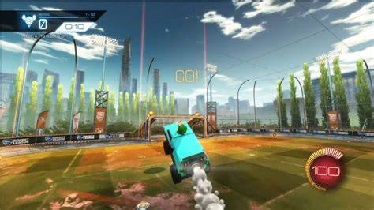

What is Rocket League?
Rocket League is a popular fee to play video in which cars, rocket boost, and soccer all combine into one crazy experience. Released way back in 2008 under its original title, Supersonic Acrobatic Rocket Powered Battle Cars, the game was fully released and revisioned in 2015 as the game so many players still play today. Players compete against each other in many differant gamemodes in a fun yet difficult expereince. The game has a very active e sports scene where proffesional players face off under a huge spotlight. Players can face off in gamemodes such s 1v1, 2v2, 3v3, 4v4, rumble, dropshot, and many more. In addition to the casual playlists there is also a ranked mode for more serious rocket powered car enthusiasts.
Wait... the cars can fly?
What makes Rocket League Special
Even though the game has been out for almost 8 years it is still steadily climbing in number of players. One of the main reasons for this is the extremly high skill ceiling achievable in the game. Each year players get better and better and pull off mechanics that were previuosly thought of as impossible. The cars in the game sound simple enough, forward, reverse, turning, jumpin, flipping, and boosting, but through combining those simple actions they can pull off stunts anyone who has ever played the game can't believe. Early in the games lifespan, players learnt how to keep the ball completley on top of their car, which they quickly named dribbling. Players have learned how to fly with their call, called an ariel and some have even mastered being able to dribble the ball on their car entirely in the air, called the all clever name of an air dribble. Fewer players have learnt how to land their car on the ball in the air,which restores their ability to flip, even being able to chain these abilitys together also cleverely named the flip reset. Players learnt that if your car falls off the cieling you never lose your flip, which you do after a few seconds if you jump. More and more of these mechanics are discovered every year and pro players push these mechanics to the limit to gain a competitive edge.
List of mechanics and their brilliant names:
- dribble
- air dribble
- ceiling shot
- flip reset
- pogo
- wave dash
- half flip
- musty flick
- breezi flick
- psyco
- speed flip
- 90 degree flick
- 180 degree flick